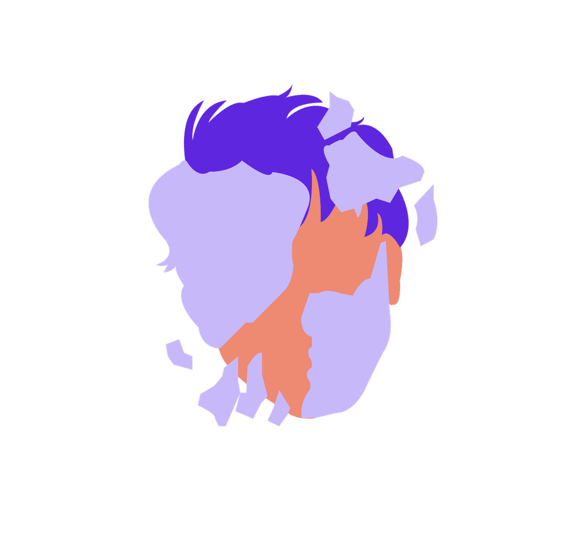

Mit der Academy erhaltet ihr im Business-Plan praxisnahe Lernmodule rund um Facilitation und wirksame Transformation.
Gemeinsam mit 9 Spaces zeigt Plan International Deutschland, wie wertebasiertes Arbeiten Orientierung gibt – nach innen wie nach außen.

Dieses Tool stärkt dein Bewusstsein für weiße Privilegien.
Dieses Tool hilft euch dabei, zu analysieren, ob eure Außenkommunikation die Realität eurer Teamzusammensetzung widerspiegelt.
Dieses Tool hilft euch dabei, euer Level an Diversität und Inklusion einzuschätzen.
Unser fragenbasiertes Einsteiger*innen-Tool hilft euch, euer Büro oder Homeoffice nachhaltiger zu gestalten.